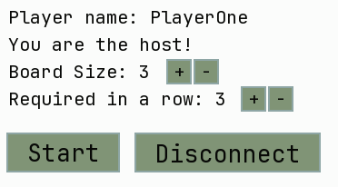
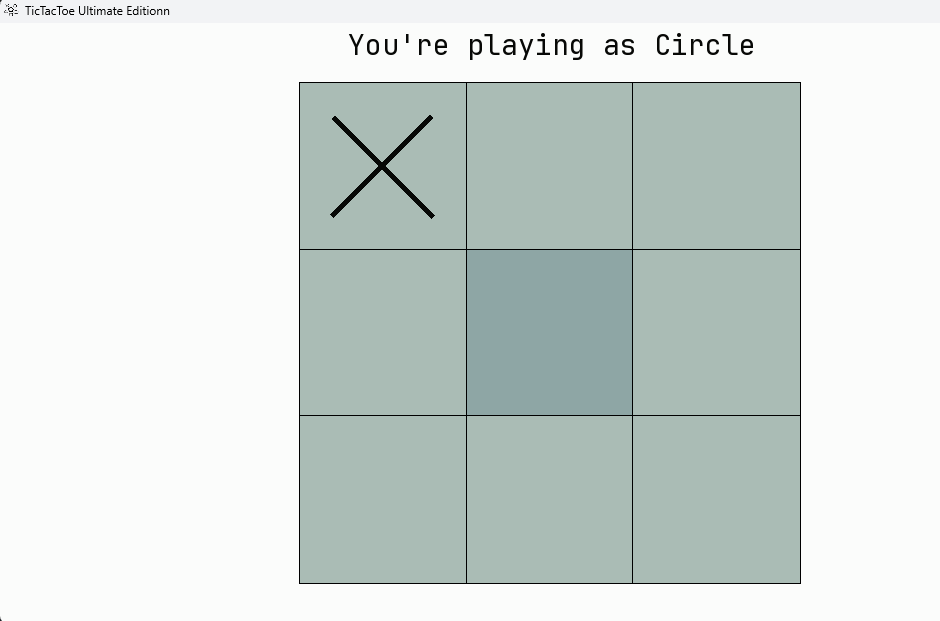

|
TicTacToeOverLan 1.0.17
TicTacToe Ultimate Edition supporting up to 6 players and a board of 32x32. Allows connections from multiple devices.
|
|
TicTacToeOverLan 1.0.17
TicTacToe Ultimate Edition supporting up to 6 players and a board of 32x32. Allows connections from multiple devices.
|
TicTacToeOverLan allows for up to 6 simultaneous players connected over the network. With port forwarding It should be possible to play over the internet. Custom board settings allow for a board of size 32x32 with custom win condition length.

The general idea is inspired by how minecraft handles it's worlds. We should have an option to launch an Internal Server by one of the Clients. Others would connect to it via a specified IP and port, or a url. The state of the game should be held and validated on the server. Board updates are going to be sent packaged with the whole board, as it's pretty small and shouldn't pose any performance concerns. The host should be the one managing the board settings, and requesting game starts and restarts.
The connections are going to be handled by WebSockets. The Windows api already contains methods for handling multiple connections at a time, making it quick to set up. Sadly that means, this implementation won't work on linux systems. A custom network protocol needs to be designed, so the server and client know what data is being transmitted and how to handle it.
The server should be the sole authoritative entity in the design. It should hold, manage and update the game state based on validated data, which arrives in the form of packets from the clients. The game state(board state) is going to be sent whole, to the clients for rendering and synchronization on each update. This doesn't pose any performance concerns on this scale.
After each move the server validates the move and checks if it's a winning one. Sending boardStateUpdate's or gameEnd packets accordingly. The win condition is check by ray-casting in all directions from the last move and counting same pieces, if they equal or exceed the winConditionLength the server sends out gameEnd packets, finishing the round.
I chose SFML library for the GUI. It's simple enough, while giving the necessary tools to create a small working GUI application. It comes with built-in functions for shapes, text and event handling, but lacks any widget functionality. That means, implementing my own widgets for buttons, text fields and the board itself. I plan to use the minecraft widget implementation as the blueprint, while cutting out unnecessary parts. All widgets would implement the Widget interface, which would contain methods like update, handleInput and render. Which is going to simplify the general usage in the game loop. Each widget is going to have a dedicated builder for ease of use. To declutter the render and update functions, each widget is going to get a displayCondition lambda, to know when and where to show up on screen. Button press or input events are going to launch callbacks for processing.
The project should work as a standalone binary, which is going to require bundling all libraries statically inside, as well as the images and fonts. Unfortunately, this is going to overly bloat the size of the binary.
The final application follows a Client-Server architecture, even when playing locally. The project was implemented using C++26, using SFML for graphics and Winsock2 for networking.
Contrary to the initial WebSocket idea, I went for Raw TCP Sockets to better understand how webservers work, also standard WebSockets were a bit overkill for a project like this. The implementation utilizes the Windows Sockets API (Winsock2).
SFML provides the window and drawing primitives(shapes and text), but lacks high-level components, like buttons or text fields. A custom Widget System was implemented to handle that.
To help with testing and state verification, a real-time Debug Overlay was implemented into the rendering loop. Toggled via the F3 key, this bypasses the standard widget system and prints raw telemetry data directly onto the screen.
Before compiling, ensure you have the following tools installed and added to PATH.
Optionally the binary can be grabbed from the releases tab in the GitHub repo: https://github.com/Bebomny/TicTacToeOverLan/releases
After a successful build, the executable will be generated in the build/ folder (or a subfolder inside build) As the images and fonts are bundled inside the binary, you're free to move it around, and It should still function as usual.
To launch it either double-click the executable, or launch it from the terminal:
The game is played in sessions. One player acts as the Host (Server), and others join as Clients.
Upon launching, you will see the Main Menu.

Once connected, players gather in the Game Room.



The game is turn-based.


All widgets should implement the widget interface, and provide builder methods for ease of use. In the GameClient widgets are placed in a map, for retrieval by name, if necessary later. If it can be done, the condition for displaying and activating a widget should go into the displayCondition callback.
The board for now has a separate handler than widgets. If necessary It can be made a widget later on.
Widgets are created in the initWidget function at the start of the application. Ideally this should be made into a screen system, but for a simple game like this it wasn't necessary. UI elements are put into position using preestablished sf::Vector2f and sf::FloatRect structures.
The client follows a handleInput → update → render loop. Each screen should have their own handle, update and render functions for readability. A screen system would improve this dramatically when considering expansion or refactoring of the project
The constructor establishes initial values, loads fonts and icons, creates the screen in a contract with SFML and the creates widgets in the initWidgets function.
Then the client runs in the run function calling handleInput, update and render functions in order. The loop runs on 60 updates per second, as per the window framerate set in the constructor.
Here we poll all events that came in on this frame, first we check for the Window Close Event, then for global keyboard events such as the debug F3 being pressed. Next is distributing events to all widgets, and finally handling non widget events in separate functions for each screen(handleMenuInput, handleGameRoomInput, handleGameInput).
HandleGameInput is also responsible for sending move requests upon the players turn, as the gameBoard isn't a widget its checked here separately.
The update function is responsible for handling widget updates, animations, and received packets. Firstly it updates all widgets, then proceeds to loop over all incoming packets, polling the NetworkManager for available full packets.
Then according to the packet header, it handles the data. For readability most packets got their own functions, instead of handling them directly in the switch statement. S2C Packets:
We clear the background, then render each menu's text, or other things in the separate screen functions. The widgets are rendered on top of the text. The debug menu is drawn on the absolute top of the screen, ensuring its always visible.
Text is rendered mostly by reusing one text object, this minimizes font loading calls, and maybe marginally improves performance.
A RegEx pattern is used for server address and port parsing, it checks if its valid and separates the ip/url and port into 2 capturing groups.
Examples:
The start function initializes default values, the initial board state and available pieces. Creates a listing socket on the specified port and spins up a while loop for polling the Windows api for packets, initial timeout is set to 10ms between polls. Should be made dynamic later to keep a constant TPS value instead of trying to reach the 10ms interval.
When a new connection arrives, the server creates a new ClientContext for the incoming connection and sends a SERVER_HELLO packet with the generated playerID. C2S Packets:
MOVE_REQ: The core gameplay packet. The server validate that:
If valid, the server updates the BoardData, appends the move to history, checks for win condition using WinValidator, and then broadcasts a BOARD_STATE_UPDATE or GAME_END packet if a win is detected.
The server additionally exposes multiple functions visible to the hosting game client containing telemetry data: getTick, getLastTickTime, getAvgTickTime, getServerPort, getCurrentTurn, getHostingPlayerId, getNextPlayerId, getBoardSettings, getAvailablePieces, getPlayers and getMoves.
A custom implementation of a rolling average to track tick times on the InternalGameServer. Utilizes mutexes for thread safe access, and comes with min, max and avg methods built in. A deque is used for the values with a limited number of entries.
Contains definitions for common objects between the client and server. Like PieceType, Player, BoardData, BoardSquare or Move structs.
All packet are defined in this file, it also utilizes the #pragma pack(push, 1) macro. This prevents the compiler from messing up the padding in the structs making the network protocol work on most architectures.
Hold the Game Icon as well as the font in byte array form. This makes moving the binary around much easier as there is no need to bundle the resource folder along with it.